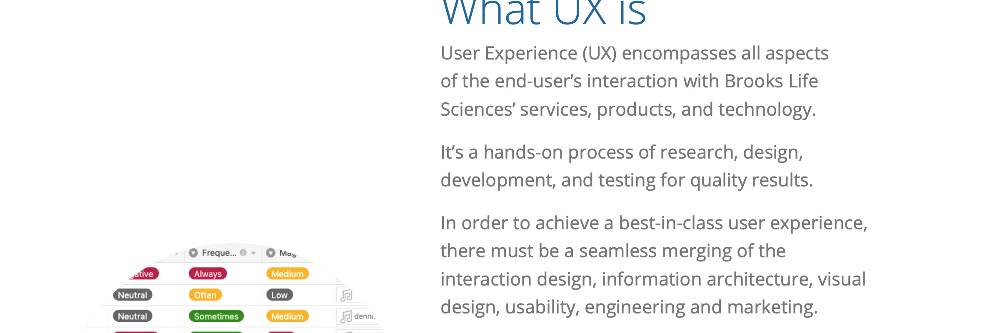
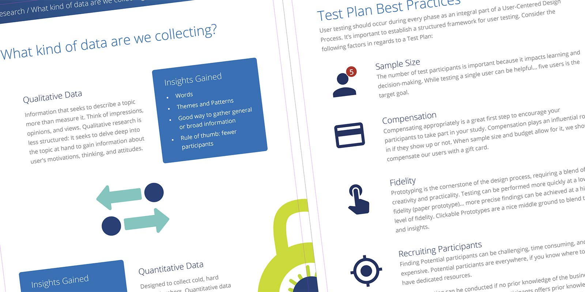
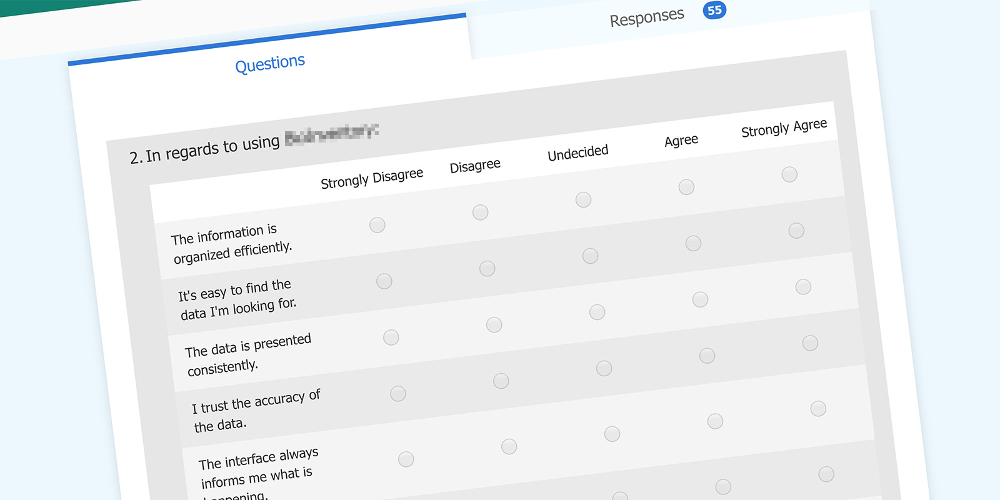
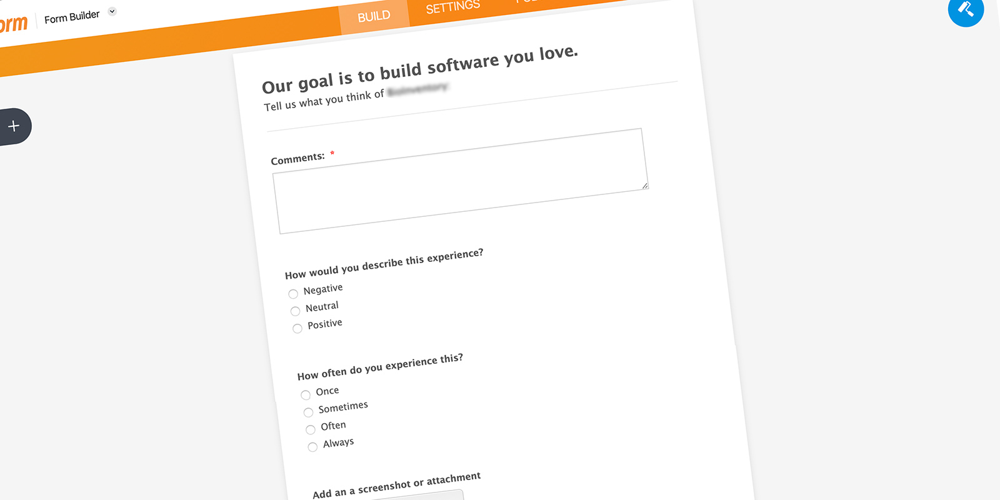
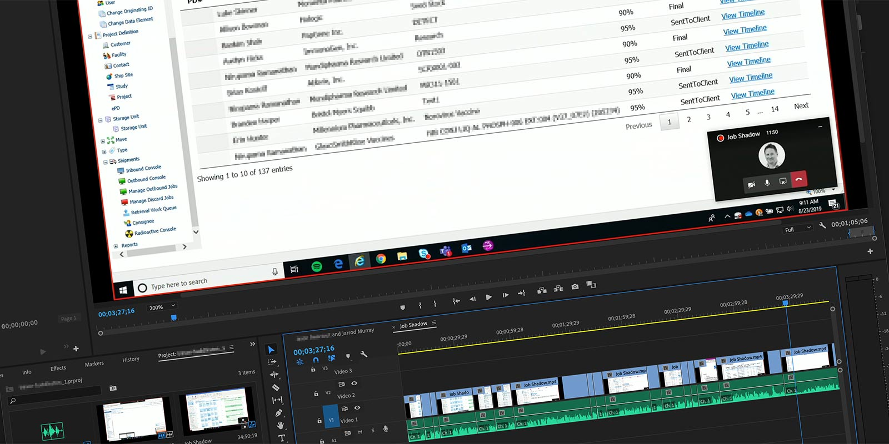
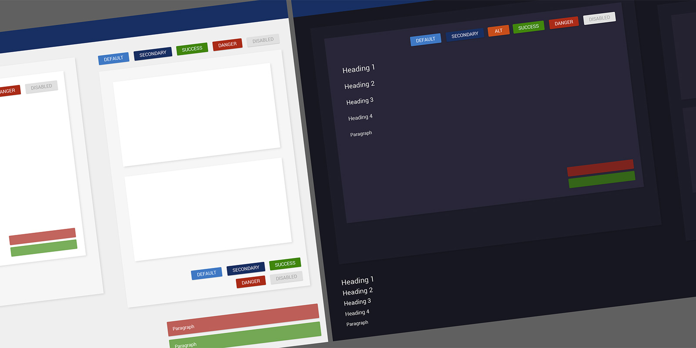
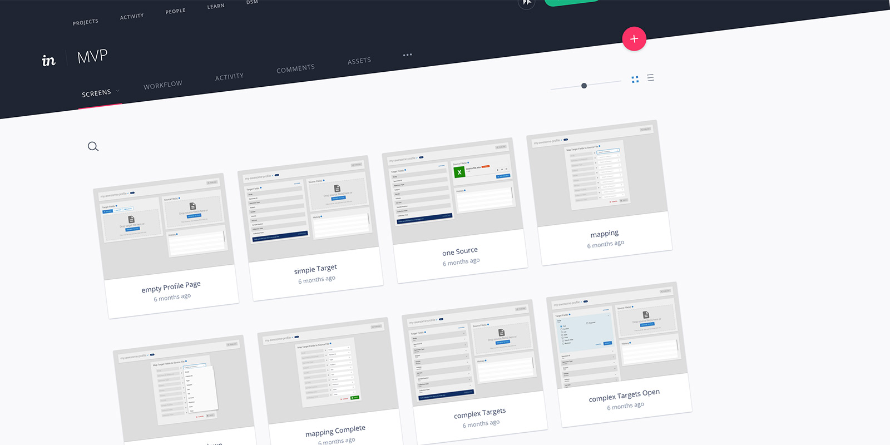
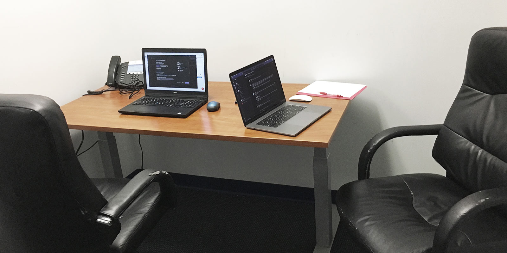

Carte Blanche UX
An opportunity to establish a user-centered UX practice
The Challenge
In April of 2019, I accepted a UX Lead position at a company with no prior UX processes in place. This was an opportunity to implement my ideal UX practice in the early stages of a large project.
Role
As UX Lead, I was tasked with creating a design system, establishing feedback channels, conducting user research, and validating solutions with users.
Un Understand
The UX Playbook
This was the second time in my career I was hired to help establish a UX practice. One of the biggest challenges is educating the business about the new role, why it was filled, and how it can benefit them. I created a UX Playbooklaunch to help.

In this document, I explained what UX is and what UX is not. I outlined a mission and three principles. I introduced my four phases as well as the techniques and methods I would be using during each phase. The Playbook also included an introduction to user research, test plans, as well as a glossary.
Establishing the Principles
The Playbook outlined three principles: User-Centered Design Methodology, a Data-Driven Approach, and Benchmarking/Best Practices. These principles serve as the foundation of the practice.
Feedback Channels
Within the first month, I was able to distribute a Heuristic Survey. I used existing company tools where feasible, so the survey was built in Microsoft Forms. A link to the form was distributed through email.

In addition, I created a feedback form using a free JotForm account. I integrated this form with a free Airtable database to capture the results.

Job Shadowing
To better understand the company roles and jobs-to-be-done, I started interviewing and shadowing our users. These interviews were recorded using an audio recorder, transcribed, and added as feedback to an Airtable database. For some of the workflow-heavy interviews, I asked the participant to join a Microsoft Teams meeting and share their screen. I would then record the meeting through Teams so I could record the users workflows. These videos were also uploaded to the database.

UX Huddle
I established a quarterly read-out which I named the ‘UX Huddle’. This informal and optional meeting is used to present findings from the last quarter.
Looking Forward
I feel confident the company has a better understanding of UX. I have established channels for collecting feedback as well as a database to compile the findings. This groundwork will greatly benefit future Discovery Phases.

Si Simplify
A Design System
A large part of my role was to lead and develop a user interface for the platform we were building. It was decided that Angular and Material UI would be used for the front end. Luckily, I already had a collection of Material components built in Sketch. However, the last time I worked with a design systemlaunch I had inherited the color palette too. This was an opportunity to create a color palette that would work in light and dark mode.

The users of this software work in difficult environments and sometimes need to read the monitor from several feet away. I wanted to make sure all colors were WCAG 2 compliant. After I selected the color palette, I updated my Sketch files and presented my new Design System.

Synopsis
A Design System allows me to produce high fidelity mock-ups to convey ideas with Product Owners and Developers. As I joined the project in the early stages, I was able to modify my existing files and be in a great spot as we started writing user stories.
Al Align
Agile UX
It's a bit of a chicken versus egg scenario… when is a feature designed? When the user stories are written? When a developer codes it? It's not always clear. In my opinion, UX should work closely with Product Owners to define features and write stories.
I've seen companies struggle injecting UX into the Agile Process. To combat this, I worked closely with Product Owners to write design agnostic user stories. I will admit this was bumpy at first as everyone got familiar with the idea… but in the end the product felt much more collaborative.
I had already established the design system… so by injecting UX earlier into the Agile process, I was able to influence the design of the solution. Working in tandem with Product Owners to write user stories allowed me to solicit user feedback or share sketches very early in the process. This effort helped keep solutions user-centered.
Prototyping
With a design system and influence on a feature level, creating UIs was rather simple. I am a big fan of Sketch and its' integration with InVision App. It has some shortcomings and limitations but it does a great job of conveying workflows and overall look and feel. The auto-sync feature keeps the prototype current with the design files for easy updating.

Va Validate
User Testing
My proudest accomplishment in establishing a UX practice was my makeshift usability lab. The room is an old, abandoned office few know about. It's a room inside another room. I moved a few items out and rearranged the furniture. I asked the participants to sit at a desk, and I sat next to them.

I created a free Calendly account and integrated it with my Microsoft account. This allowed the participants to find time on my calendar while giving me the freedom to select the dates and restrict back-to-back meetings. Even with a free account, the added flexibility of Calendly was impressive.
For the session, I scheduled an online Microsoft Teams meeting. The participant sat at a PC running Chrome and Teams, while I sat at a Mac running Teams. Before the participant entered the room, I joined the online meeting from both computers, and shared the screen of the PC. This would record the participant’s screen and face. When the participant was ready, I started the recording from the Mac.
Shortly after the session, the video would be made available on Microsoft Stream, where I could generate closed captioning. The CC is not 100% accurate, but makes transcribing faster. Upon completion, the videos and transcriptions were uploaded to the Airtable database. The output was very well received and I was very happy with the tools.
Takeaways…
Things I Learned
- A different, and heavily regulated industry
- New tools: Airtable, Calendly, Teams, Forms, and JotForm
- How to establish a repeatable and sustainable UX practice
The Launch
There was no official launch date. UX is an ongoing process.
The Impact
Business is making more informed decisions… understanding how users are affected by software and how the software affects the bottom line.